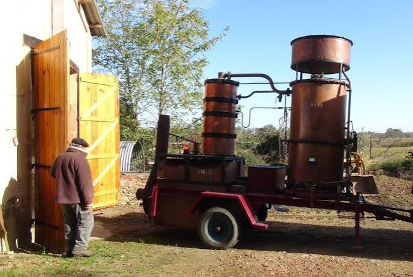

Armagnac
AOP


⟹ La Plus Vieille Eau-de-Vie de France ⟸
L'art de la distillation arrive en Gascogne par les Arabes, qui l'apportent lors de leur passage dans la péninsule Ibérique. Les moines et les médecins de la faculté de Montpellier s'en emparent dès le XIIe siècle pour fabriquer des remèdes, des huiles et des parfums à usage thérapeutique.
Le premier témoignage écrit de cette « aygue ardente » gasconne remonte à 1310 : Vital du Four, prieur d'Eauze et de Saint-Mont, décrit dans un traité de médecine les quarante vertus de cette eau-de-vie de vin, alors réservée à la pharmacopée.

À partir du XVIIe siècle, les marchands hollandais jouent un rôle déterminant dans l’essor de la distillation en Gascogne : les restrictions bordelaises frappent le commerce des vins du Haut-Pays, tandis que l’alcool peut circuler plus facilement. Le marché de l’eau-de-vie se développe alors, puis le vieillissement en fût révèle progressivement la couleur, la rondeur et la complexité aromatique de l’Armagnac.
Il faut attendre le XXe siècle pour que la région s'organise véritablement : un décret du 25 mai 1909 délimite le terroir de production, puis celui du 6 août 1936 institue l'Appellation d'Origine Contrôlée « Armagnac », consacrant réglementairement une eau-de-vie dont le premier témoignage historique remonte à 1310.
« Le temps ne fait rien à l'affaire, disent certains ; en Armagnac, c'est tout le contraire : c'est lui qui fait l'affaire. »
— dicton gasconVS : eau-de-vie vieillie au minimum 1 an en fût de chêne, aux arômes encore vifs et fruités.
VSOP : un assemblage d'eaux-de-vie vieillies au minimum 4 à 5 ans, plus rond et plus épicé.
XO / Hors d'Âge : minimum 10 ans de vieillissement, pour des arômes complexes de fruits confits, de cuir et de sous-bois.
Blanche Armagnac : eau-de-vie non vieillie, mise en bouteille juste après distillation, appréciée pour sa pureté aromatique.
Millésime : issu d'une seule année de récolte, il révèle la signature d'un terroir et d'un climat particuliers.
Trois terroirs : le Bas-Armagnac (sables fauves) donne les eaux-de-vie les plus fines ; l'Armagnac-Ténarèze (argilo-calcaire) des eaux-de-vie structurées ; le Haut-Armagnac, plus confidentiel aujourd'hui.
Une eau-de-vie documentée depuis 1310. Le texte de Vital Dufour consacré aux vertus de l’« aygue ardente » constitue le grand repère historique de l’Armagnac. Sa commercialisation est attestée au XVe siècle, puis le commerce se développe fortement aux XVIIe et XVIIIe siècles.
Trois terroirs complémentaires. Le Bas-Armagnac est associé aux sables fauves, la Ténarèze à des sols notamment argilo-calcaires et le Haut-Armagnac à des paysages plus calcaires. Cette diversité, ajoutée aux cépages et aux choix d’élevage, explique la variété des profils aromatiques.
Un alambic emblématique. Environ 95 % de l’Armagnac est aujourd’hui produit avec l’alambic continu armagnacais, appareil en cuivre dont un brevet fut déposé en 1818. La distillation hivernale reste un moment majeur de la vie des domaines, parfois assurée par des bouilleurs ambulants.
Assemblage ou millésime. L’Armagnac peut être commercialisé en assemblage de plusieurs eaux-de-vie ou sous forme millésimée, particularité très identitaire de l’appellation. Le millésime correspond à une seule année de récolte et met en avant l’expression d’un terroir, d’un cépage et d’un élevage.
Documentation : histoire, terroirs, distillation, vieillissement et réglementation.
Sources : Bureau National Interprofessionnel de l’Armagnac · cahier des charges de l’appellationEauze, capitale historique de l'Armagnac, où se concentrent plusieurs maisons de négoce réputées.
Condom, sur les bords de la Baïse, au cœur du terroir de Ténarèze.
Domaines familiaux ouverts à la visite, proposant découverte des chais et dégustation commentée.
La Route de l'Armagnac et ses fêtes locales, qui rythment la vie du vignoble gascon toute l'année.